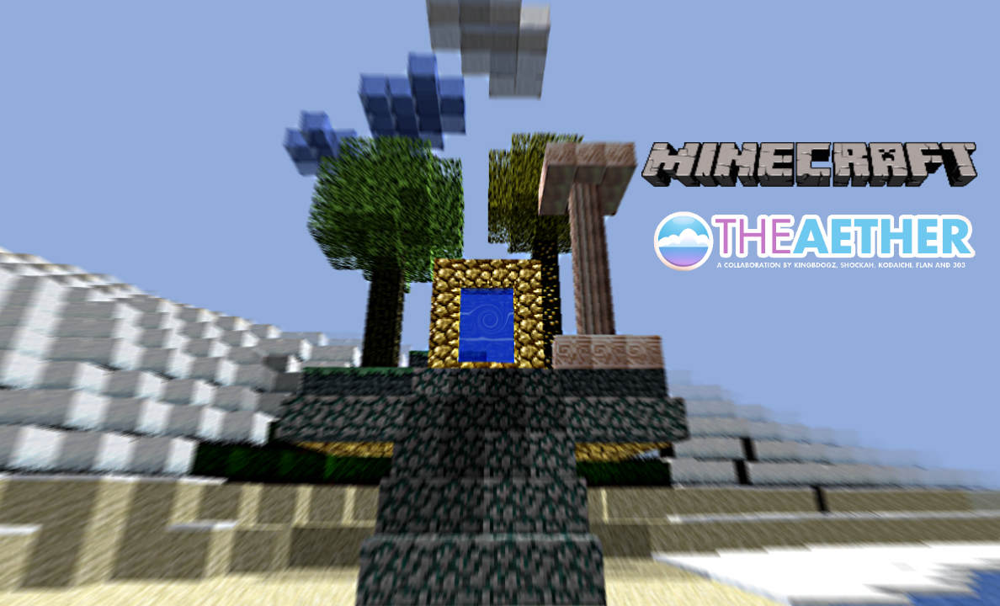

Modding
The modding community consists of fans, users and third-party programmers. Using a variety of application program interfaces that have arisen over time, they have produced a wide variety of downloadable content for Minecraft, such as modifications, texture packs and custom maps. Modifications of the Minecraft code, called mods, add a variety of gameplay changes, ranging from new blocks, items, and mobs to entire arrays of mechanisms. The modding community is responsible for a substantial supply of mods from ones that enhance gameplay, such as minimaps, waypoints, and durability counters, to ones that add to the game elements from other video games and media. While a variety of mod frameworks were independently developed by reverse engineering the code, Mojang has also enhanced vanilla Minecraft with official frameworks for modification, allowing the production of community-created resource packs, which alter certain game elements including textures and sounds. Players can also create their own "maps" (custom world save files) which often contain specific rules, challenges, puzzles and quests, and share them for others to play. Mojang added an adventure mode in August 2012 and "command blocks" in October 2012, which were created specially for custom maps in Java Edition. Data packs, introduced in version 1.13 of the Java Edition, allow further customization, including the ability to add new advancements, dimensions, functions, loot tables, predicates, recipes, structures, tags, world generation settings, and biomes.
